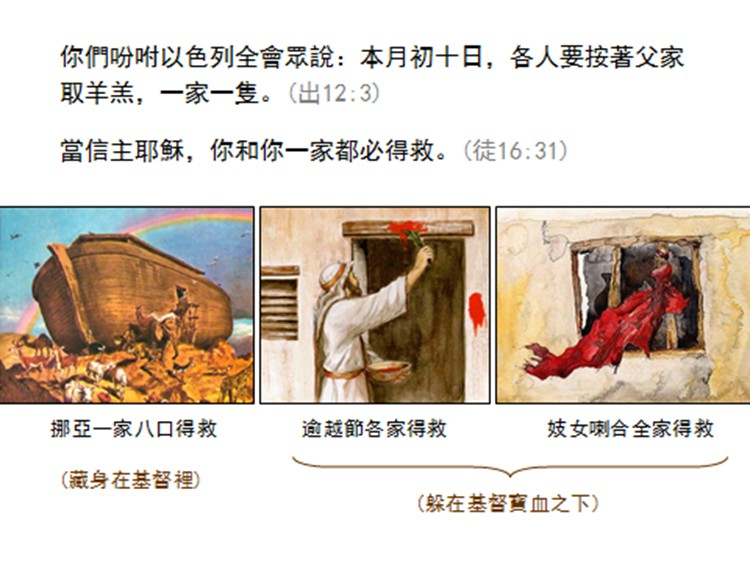

一、凝聚活動話題：
彼此分享自己上週最感恩的一件事情。
二、榮耀：
選1～2首詩歌，安排一位組員做見證
三、成長
讀經～出埃及記十二章21～36節
a) 小組討論題目：
- 分享一個貼春聯的經驗
- 分享一個你有印象的過年習俗
- 你覺得逾越節與春聯文化有什麼類似的地方？

小組長分享
今日華人過春節時，喜愛用紅紙條寫對句貼于門楣與門框之上的習俗，與猶太人之逾越節塗羔羊的血於門框與門楣上有密切的關聯，從這個立場觀之，基督徒理應可行，只是春聯上之詞句不可不留意，應儘量使用聖經經文中之詞句或選擇一些比較基督化之文句為宜。
b) 小組討論題目：
- 分享一個你記得的羌族文化與逾越節的關係。
- 你覺得逾越節與基督徒有何關係？
- 過年期間，你想和誰分享春聯與逾越節的故事？
小組長分享：基督徒如何過一個有意義的年
第一、感恩回顧
過年對華人來說，具有除舊布新、祈安求福、合家團圓等意義。然而，
過年對基督徒而言，它的第一個意義應是感恩，因「從歲首到年終，
耶和華的眼目時常看顧我們，使我們行過的路徑都滴下脂油」
（申11：12節；詩65：11、103：2）。基督徒理當在過年時向
耶和華獻上感恩祭。
【申十 一12】「是耶和華你神所眷顧的；從歲首到年終，
耶和華你神的眼目時常看顧那地。」
許下新願
就是靠主恩典，對未來一年心中充滿盼望，並在神前作一妥善的年度計劃，求神幫助達成心中的願望（腓立比書3：13、14，4：13），如：
願新的一年內能再把聖經讀完一遍；或在未來一年中最少帶領十個人信主等等。
【腓三13】「弟兄們，我不是以為自己已經得著了；我只有一件事，
就是忘記背後努力面前的」：
【腓三14】「向著標竿直跑，要得神在基督耶穌裏從上面召我來得的獎賞。」
【腓四13】「我靠著那加給我力量的，凡事都能作。」
四、出發
使用《新春10天禱告日誌》禱告